Chapter 2 Burial rites
2.1 Data
# graves <- fread("./EAA2024_burial_rite_data.csv", stringsAsFactors = F, na.strings = "\\N")
graves <- fread("./Data/Burial.csv", na.strings = "")
graves$DepositionType <- as.factor(graves$DepositionType)
graves$BodyPositioning <- as.factor(graves$BodyPositioning)
graves$BurialSide <- as.factor(graves$BurialSide)
# Sites table (BIAD)
sites <- setDT(query.database("SELECT * FROM `Sites`", conn))
# Culture and Period
culture <- fread("./Data/burial rites_culture_period.csv", na.strings = "\\N")
culture <- culture[!duplicated(IndividualID)]
## Add info to graves table
graves <- merge(graves, sites[, .(SiteID, Country)], by = "SiteID", all.x = T)
rm(sites)
graves <- merge(graves, culture, by = "IndividualID", all.x = T)2.2 Multiple correspondence analysis
## Data
bp <- grep("BodyPositioning_", colnames(graves))
bs <- grep("BurialSide_", colnames(graves))
mat <- as.data.frame(cbind(graves[, ..bp], graves[, ..bs]))
mat <- as.matrix(mat)
dim(mat)## [1] 4275 22## Multiple Correspondence Analysis
mca <- MCA(graves[, .(BurialSide, BodyPositioning)], graph = F)
summary(mca)##
## Call:
## MCA(X = graves[, .(BurialSide, BodyPositioning)], graph = F)
##
##
## Eigenvalues
## Dim.1 Dim.2 Dim.3 Dim.4 Dim.5 Dim.6 Dim.7
## Variance 0.965 0.912 0.872 0.676 0.561 0.513 0.501
## % of var. 8.773 8.292 7.931 6.147 5.103 4.660 4.555
## Cumulative % of var. 8.773 17.066 24.997 31.143 36.246 40.906 45.461
## Dim.8 Dim.9 Dim.10 Dim.11 Dim.12 Dim.13 Dim.14
## Variance 0.500 0.500 0.500 0.500 0.500 0.500 0.500
## % of var. 4.545 4.545 4.545 4.545 4.545 4.545 4.545
## Cumulative % of var. 50.007 54.552 59.098 63.643 68.189 72.734 77.280
## Dim.15 Dim.16 Dim.17 Dim.18 Dim.19 Dim.20 Dim.21
## Variance 0.500 0.499 0.487 0.439 0.324 0.128 0.088
## % of var. 4.545 4.536 4.431 3.988 2.944 1.160 0.798
## Cumulative % of var. 81.825 86.361 90.791 94.780 97.724 98.884 99.683
## Dim.22
## Variance 0.035
## % of var. 0.317
## Cumulative % of var. 100.000
##
## Individuals (the 10 first)
## Dim.1 ctr cos2 Dim.2 ctr cos2 Dim.3 ctr
## 1 | 1.323 0.042 0.455 | -0.838 0.018 0.182 | 0.014 0.000
## 2 | 1.345 0.044 0.005 | -0.887 0.020 0.002 | 0.015 0.000
## 3 | 1.323 0.042 0.455 | -0.838 0.018 0.182 | 0.014 0.000
## 4 | 1.323 0.042 0.455 | -0.838 0.018 0.182 | 0.014 0.000
## 5 | 1.323 0.042 0.455 | -0.838 0.018 0.182 | 0.014 0.000
## 6 | 1.345 0.044 0.005 | -0.887 0.020 0.002 | 0.015 0.000
## 7 | -0.743 0.013 0.524 | 0.008 0.000 0.000 | -0.071 0.000
## 8 | 1.345 0.044 0.006 | -0.887 0.020 0.003 | 0.015 0.000
## 9 | 1.345 0.044 0.006 | -0.887 0.020 0.003 | 0.015 0.000
## 10 | -0.743 0.013 0.524 | 0.008 0.000 0.000 | -0.071 0.000
## cos2
## 1 0.000 |
## 2 0.000 |
## 3 0.000 |
## 4 0.000 |
## 5 0.000 |
## 6 0.000 |
## 7 0.005 |
## 8 0.000 |
## 9 0.000 |
## 10 0.005 |
##
## Categories (the 10 first)
## Dim.1 ctr cos2 v.test Dim.2 ctr cos2
## back | 1.331 6.206 0.128 23.433 | 3.222 38.472 0.753
## back/left | 1.369 0.068 0.001 2.372 | -0.928 0.033 0.001
## back/right | 1.316 0.105 0.002 2.943 | -0.359 0.008 0.000
## bottom | -1.048 0.067 0.001 -2.344 | -0.004 0.000 0.000
## BurialSide.NA | -0.730 17.739 0.958 -63.987 | -0.001 0.000 0.000
## front | 1.017 0.326 0.006 5.199 | 1.714 0.980 0.018
## front/left | 1.369 0.045 0.001 1.937 | -0.928 0.022 0.000
## front/right | 1.412 0.073 0.001 2.447 | 2.370 0.216 0.004
## left | 1.326 14.289 0.327 37.394 | -0.835 6.005 0.130
## left/back | 1.369 0.159 0.003 3.625 | -0.928 0.077 0.001
## v.test Dim.3 ctr cos2 v.test
## back 56.720 | 0.015 0.001 0.000 0.265 |
## back/left -1.609 | 0.016 0.000 0.000 0.028 |
## back/right -0.803 | 0.013 0.000 0.000 0.028 |
## bottom -0.008 | 27.276 49.875 0.871 61.021 |
## BurialSide.NA -0.093 | -0.057 0.121 0.006 -5.024 |
## front 8.767 | -0.004 0.000 0.000 -0.020 |
## front/left -1.313 | 0.016 0.000 0.000 0.023 |
## front/right 4.106 | 0.019 0.000 0.000 0.033 |
## left -23.567 | 0.014 0.002 0.000 0.395 |
## left/back -2.458 | 0.016 0.000 0.000 0.043 |
##
## Categorical variables (eta2)
## Dim.1 Dim.2 Dim.3
## BurialSide | 0.965 0.912 0.872 |
## BodyPositioning | 0.965 0.912 0.872 |## Biplot
# Dimensions 1 and 2
fviz_mca_biplot(mca,
col.ind = c("#C1E8AF"),
col.var = c("#382F55"),
alpha.ind = 0.2,
repel = FALSE, # Avoid text overlapping (slow if many point)
ggtheme = theme_minimal()
)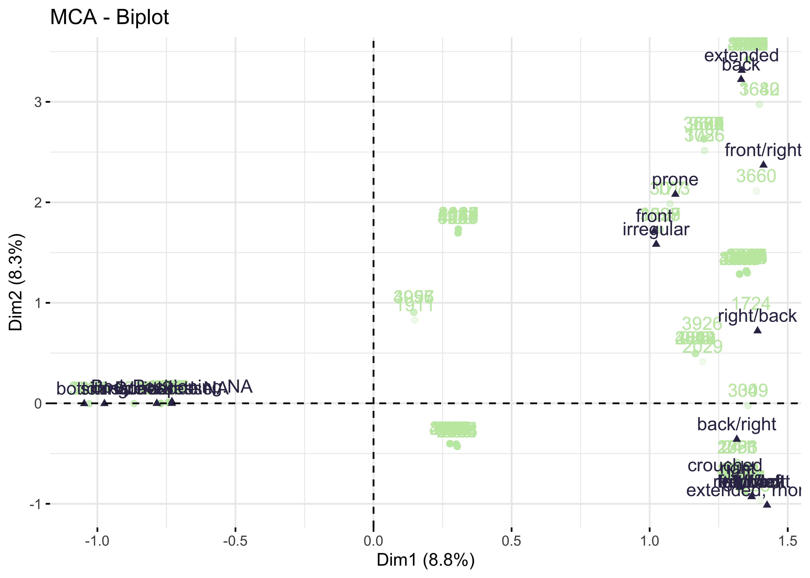
knitr::include_graphics("~/Library/CloudStorage/OneDrive-UniversityofCopenhagen/Graves/Figures/MCA_biplot.png")
# Dimensions 1 and 3
fviz_mca_biplot(mca,
axes = c(1,3),
col.ind = c("#C1E8AF"),
col.var = c("#382F55"),
alpha.ind = 0.2,
repel = FALSE, # Avoid text overlapping (slow if many point)
ggtheme = theme_minimal()
)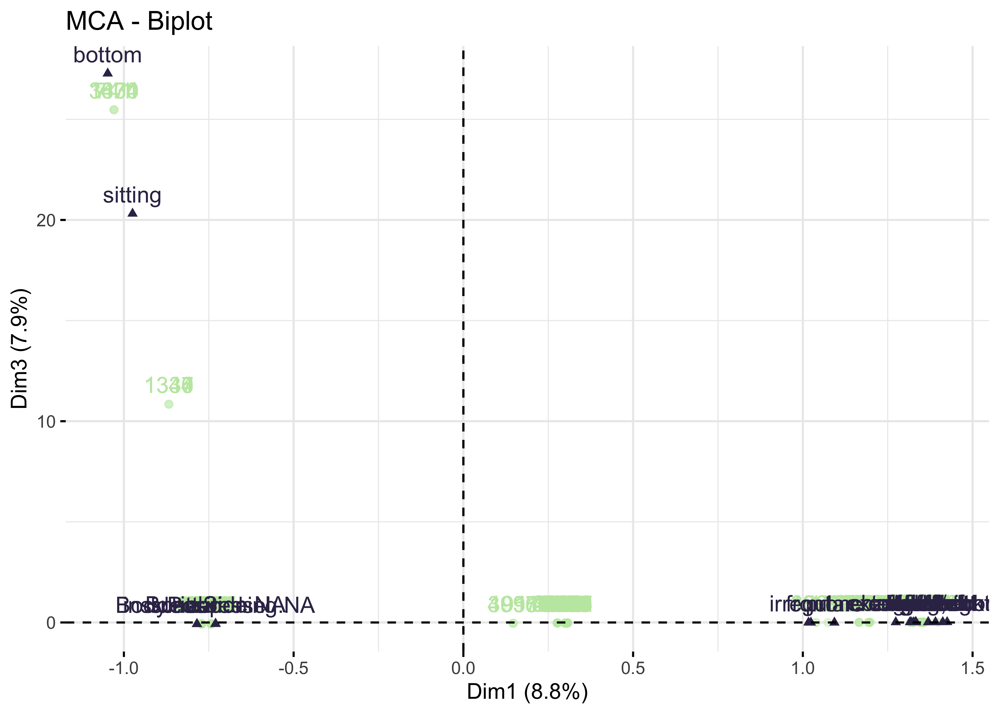
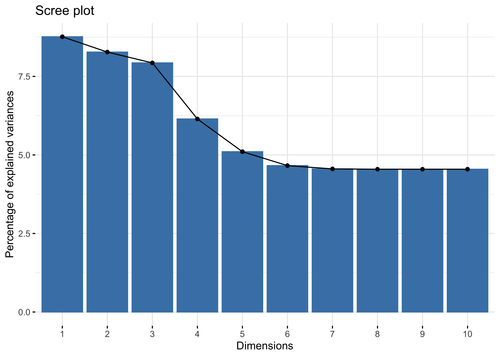
## Look at the quality of representation of variable categories
fviz_cos2(mca, choice = "var", axes = 1:2)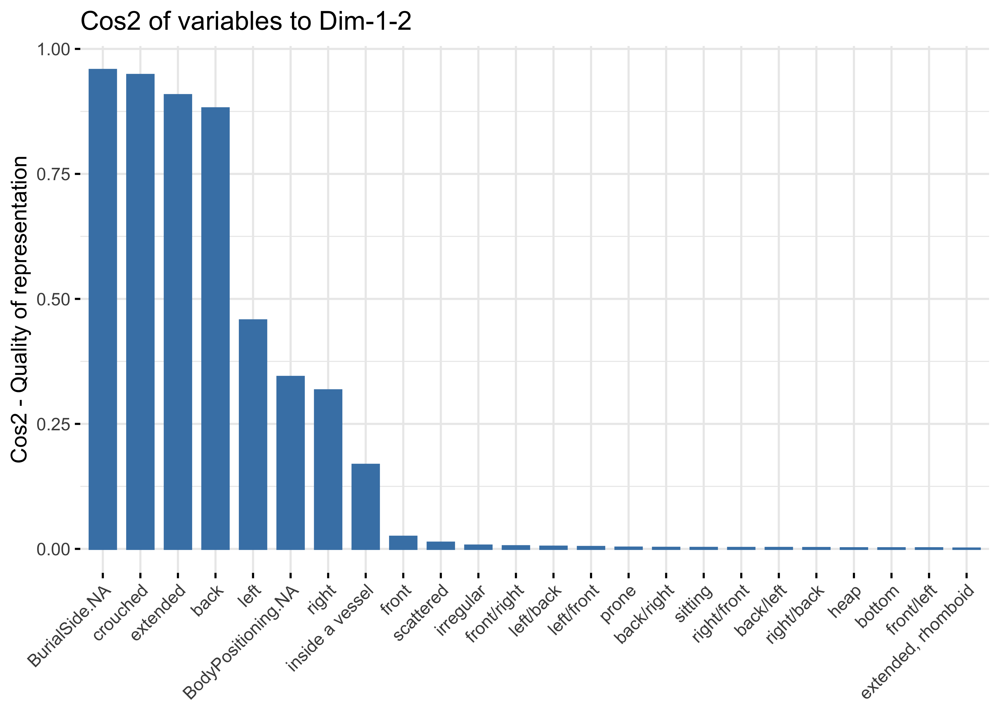
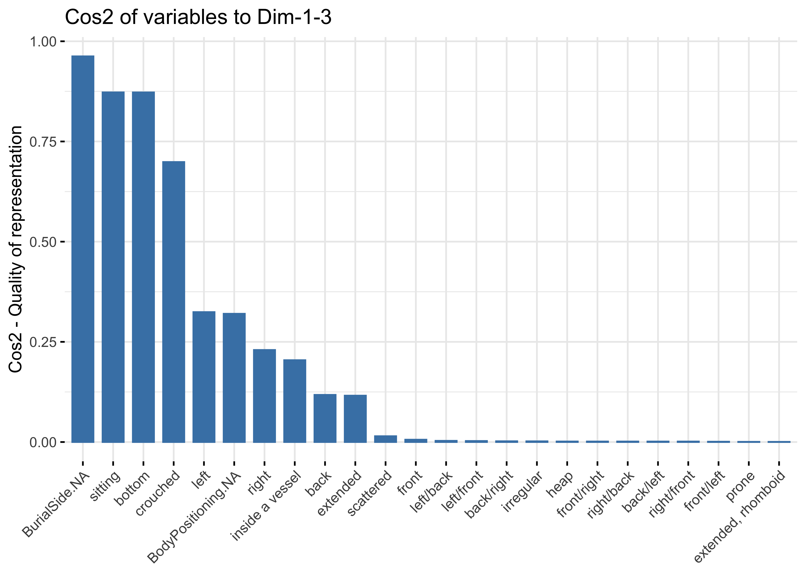
## Dim 1 Dim 2 Dim 3 Dim 4 Dim 5
## 1 1.322962 -0.8380609 0.0140271 -0.08612123 -0.1118079
## 2 1.345229 -0.8867854 0.0152866 -0.07948919 -0.0950504
## 3 1.322962 -0.8380609 0.0140271 -0.08612123 -0.1118079
## 4 1.322962 -0.8380609 0.0140271 -0.08612123 -0.1118079
## 5 1.322962 -0.8380609 0.0140271 -0.08612123 -0.1118079
## 6 1.345229 -0.8867854 0.0152866 -0.07948919 -0.0950504## Dim 1 Dim 2 Dim 3 Dim 4 Dim 5
## 1 0.454573621 0.182415057 5.110289e-05 0.0019263269 3.246791e-03
## 2 0.005070231 0.002203295 6.547225e-07 0.0000177032 2.531299e-05
## 3 0.454573621 0.182415057 5.110289e-05 0.0019263269 3.246791e-03
## 4 0.454573621 0.182415057 5.110289e-05 0.0019263269 3.246791e-03
## 5 0.454573621 0.182415057 5.110289e-05 0.0019263269 3.246791e-03
## 6 0.005070231 0.002203295 6.547225e-07 0.0000177032 2.531299e-05## Dim 1 Dim 2 Dim 3 Dim 4 Dim 5
## 1 0.04242218 0.01801113 5.275963e-06 0.0002565910 0.0005209787
## 2 0.04386221 0.02016633 6.265960e-06 0.0002185934 0.0003765157
## 3 0.04242218 0.01801113 5.275963e-06 0.0002565910 0.0005209787
## 4 0.04242218 0.01801113 5.275963e-06 0.0002565910 0.0005209787
## 5 0.04242218 0.01801113 5.275963e-06 0.0002565910 0.0005209787
## 6 0.04386221 0.02016633 6.265960e-06 0.0002185934 0.0003765157## Dim 1 Dim 2 Dim 3 Dim 4 Dim 5
## back 1.3311704 3.222113770 0.015046611 -0.53813071 0.115302261
## back/left 1.3693464 -0.928499142 0.016366728 -0.09666886 -0.126870199
## back/right 1.3155634 -0.358894978 0.012521280 7.10222939 20.812083402
## bottom -1.0476985 -0.003798750 27.276489063 0.01478600 -0.003133533
## BurialSide.NA -0.7299697 -0.001059584 -0.057315989 -0.01435338 0.003810972
## front 1.0166440 1.714392549 -0.003881921 9.89086156 -2.847342772## Dim 1 Dim 2 Dim 3 Dim 4 Dim 5
## back 0.128477727 7.527353e-01 1.641489e-05 2.099598e-02 9.639094e-04
## back/left 0.001316790 6.054148e-04 1.881108e-07 6.562408e-06 1.130340e-05
## back/right 0.002026589 1.508262e-04 1.835860e-07 5.906518e-02 5.071930e-01
## bottom 0.001285330 1.689755e-08 8.712024e-01 2.560022e-07 1.149769e-08
## BurialSide.NA 0.957954734 2.018395e-06 5.905911e-03 3.703770e-04 2.610999e-05
## front 0.006324474 1.798486e-02 9.221040e-08 5.986250e-01 4.960965e-02## Dim 1 Dim 2 Dim 3 Dim 4 Dim 5
## back 6.20630997 3.847153e+01 8.772252e-04 1.447653e+00 8.006058e-02
## back/left 0.06817360 3.316226e-02 1.077410e-05 4.849372e-04 1.006203e-03
## back/right 0.10487256 8.257805e-03 1.051001e-05 4.362650e+00 4.512803e+01
## bottom 0.06651368 9.251483e-07 4.987499e+01 1.890874e-05 1.023019e-06
## BurialSide.NA 17.73930766 3.954480e-05 1.209891e-01 9.789451e-03 8.313336e-04
## front 0.32567127 9.798368e-01 5.252941e-06 4.399797e+01 4.392362e+00## Dimension description
res.desc <- dimdesc(mca, axes = c(1,2,3))
# Description of dimension 1
res.desc[[1]]##
## Link between the variable and the categorical variable (1-way anova)
## =============================================
## R2 p.value
## BurialSide 0.965085 0
## BodyPositioning 0.965085 0
##
## Link between variable and the categories of the categorical variables
## ================================================================
## Estimate p.value
## BodyPositioning=crouched 1.045987510 0.000000e+00
## BurialSide=left 0.307231364 0.000000e+00
## BurialSide=right 0.300770843 1.601385e-248
## BurialSide=back 0.312706294 8.638593e-130
## BodyPositioning=extended 1.104703965 1.007513e-127
## BurialSide=front 0.003719506 1.924871e-07
## BurialSide=left/back 0.350209949 2.860113e-04
## BurialSide=left/front 0.350209949 7.856862e-04
## BurialSide=back/right 0.297374167 3.239553e-03
## BodyPositioning=irregular 0.800256221 3.750315e-03
## BurialSide=front/right 0.392292906 1.440611e-02
## BurialSide=right/back 0.371251427 1.595971e-02
## BurialSide=right/front 0.350209949 1.765871e-02
## BurialSide=back/left 0.350209949 1.765871e-02
## BurialSide=bottom -2.024264493 1.906977e-02
## BodyPositioning=heap -0.976252195 1.842972e-02
## BodyPositioning=sitting -1.162677341 3.419115e-03
## BodyPositioning=scattered -0.976252195 2.317330e-13
## BodyPositioning=inside a vessel -0.976252195 4.132094e-173
## BodyPositioning=BodyPositioning.NA -0.922634967 0.000000e+00
## BurialSide=BurialSide.NA -1.712131758 0.000000e+00##
## Link between the variable and the categorical variable (1-way anova)
## =============================================
## R2 p.value
## BurialSide 0.9121663 0
## BodyPositioning 0.9121663 0
##
## Link between variable and the categories of the categorical variables
## ================================================================
## Estimate p.value
## BodyPositioning=extended 2.6669805 0.000000e+00
## BurialSide=back 2.9823430 0.000000e+00
## BurialSide=front 1.5423577 1.300797e-18
## BodyPositioning=irregular 1.0140679 7.337985e-06
## BurialSide=front/right 2.1683493 3.974399e-05
## BodyPositioning=prone 1.4891308 3.255675e-03
## BurialSide=left/front -0.9817994 2.284775e-02
## BurialSide=left/back -0.9817994 1.394247e-02
## BurialSide=right -0.8519653 1.172108e-83
## BurialSide=left -0.8929097 2.353349e-131
## BodyPositioning=crouched -1.2281751 4.093779e-271##
## Link between the variable and the categorical variable (1-way anova)
## =============================================
## R2 p.value
## BurialSide 0.8723646 0
## BodyPositioning 0.8723646 0
##
## Link between variable and the categories of the categorical variables
## ================================================================
## Estimate p.value
## BodyPositioning=sitting 17.100574 0.000000e+00
## BurialSide=bottom 23.649086 0.000000e+00
## BodyPositioning=inside a vessel -1.944305 8.541114e-03
## BodyPositioning=BodyPositioning.NA -1.942110 8.857277e-05
## BurialSide=BurialSide.NA -1.880814 4.887254e-072.3 UpSet plot
We can produce an UpSet plot to better visualize the structure of the data. An UpSet plot is a simplified visualization of a Venn diagram.
upset_df <- graves[, .(IndividualID, BodyPositioning_crouched, BodyPositioning_extended, `BodyPositioning_extended, rhomboid`, BodyPositioning_heap, `BodyPositioning_inside a vessel`, BodyPositioning_irregular, BodyPositioning_prone, BodyPositioning_scattered, BodyPositioning_sitting, BurialSide_back, `BurialSide_back/left`, `BurialSide_back/right`, BurialSide_bottom, BurialSide_front, `BurialSide_front/left`, `BurialSide_front/right`, BurialSide_left, `BurialSide_left/back`, `BurialSide_left/front`, BurialSide_right, `BurialSide_right/back`, `BurialSide_right/front`)]
# UpSet plot with all variables
upset(upset_df, sets = colnames(upset_df)[-1], order.by = 'freq', keep.order = F)
set_size <- data.frame(Set = colnames(upset_df)[-1],
Size = colSums(upset_df[,-1], na.rm = T))
ggplot(data = set_size) +
geom_bar(aes(x = reorder(Set, Size, decreasing = T), y = Size), stat = "identity") +
theme_bw() +
ylab("Set Size") +
theme(axis.text.x = element_text(angle = 45, hjust = 1),
axis.title.x = element_blank(),
plot.margin = margin(t = 5, r = 10, l = 30, b = 5))
# UpSet plot with selected variables
sets <- c("BodyPositioning_crouched", "BodyPositioning_extended", "BodyPositioning_heap", "BodyPositioning_inside a vessel", "BodyPositioning_prone", "BodyPositioning_scattered", "BodyPositioning_sitting","BurialSide_bottom", "BurialSide_front", "BurialSide_left", "BurialSide_right", "BurialSide_back")
upset(upset_df, sets = sets, order.by = 'freq', keep.order = T, set_size.show = T)
set_size <- set_size[which(set_size$Set %in% sets),]
ggplot(data = set_size) +
geom_bar(aes(x = reorder(Set, Size, decreasing = T), y = Size), stat = "identity") +
theme_bw() +
ylab("Set Size") +
theme(axis.text.x = element_text(angle = 45, hjust = 1),
axis.title.x = element_blank(),
plot.margin = margin(t = 5, r = 10, l = 20, b = 5))
Now let’s plot the MCA biplots without the repel option. We color the individuals by other variables, including culture, period, country, and ancestry values.
In this case, because the individuals are too many, I decided to count the number of individuals in each variable and for each dimension coordinate.
## Create dataframe
# Individuals
ind_dims <- as.data.frame(ind$coord)
ind_dims$Individual <- 1:nrow(ind_dims)
ind_dims$Country <- graves$Country
ind_dims$Period <- graves$Period
ind_dims$Culture <- graves$Culture
ind_dims$Sex <- graves$Sex
ind_dims$EHG <- graves$ANCE2_v2
ind_dims$WHG <- graves$ANCE4_v2
ind_dims$LVN <- graves$ANCE6_v2
ind_dims$CHG <- graves$ANCE8_v2
ind_dims$mobility <- graves$mobility_MDS_250y_retrospective
head(ind_dims)## Dim 1 Dim 2 Dim 3 Dim 4 Dim 5 Individual Country
## 1 1.322962 -0.8380609 0.0140271 -0.08612123 -0.1118079 1 Slovakia
## 2 1.345229 -0.8867854 0.0152866 -0.07948919 -0.0950504 2 Slovakia
## 3 1.322962 -0.8380609 0.0140271 -0.08612123 -0.1118079 3 Slovakia
## 4 1.322962 -0.8380609 0.0140271 -0.08612123 -0.1118079 4 Slovakia
## 5 1.322962 -0.8380609 0.0140271 -0.08612123 -0.1118079 5 Slovakia
## 6 1.345229 -0.8867854 0.0152866 -0.07948919 -0.0950504 6 Slovakia
## Period Culture Sex EHG WHG LVN CHG
## 1 Neolithic Linearbandkeramik 1.00 0.01482775 0.09702275 0.8293732 0.04803575
## 2 Neolithic Linearbandkeramik 0.00 0.01482775 0.09702275 0.8293732 0.04803575
## 3 Neolithic Linearbandkeramik 0.25 0.01482775 0.09702275 0.8293732 0.04803575
## 4 Neolithic Linearbandkeramik 0.00 0.01482775 0.09702275 0.8293732 0.04803575
## 5 Neolithic Linearbandkeramik 0.50 0.01482775 0.09702275 0.8293732 0.04803575
## 6 Neolithic Linearbandkeramik 1.00 0.01482775 0.09702275 0.8293732 0.04803575
## mobility
## 1 156.25
## 2 156.25
## 3 156.25
## 4 156.25
## 5 156.25
## 6 156.252.4 MCA Biplots
2.4.1 Biplot
dim_biplot <- ind_dims[, .N, by = c("Dim 1", "Dim 2")]
ggplot() +
geom_point(data = dim_biplot,
aes(x = `Dim 1`, y = `Dim 2`,
size = N),
position = position_jitter(0.2, 0.2),
shape = 21,
fill = "lightblue") +
scale_size_continuous("Count", breaks = c(1, 50, 100, 250, 500, 750, 1000),
range = c(3,20)) +
geom_point(data = var_dims,
aes(x = `Dim 1`, y = `Dim 2`),
shape = 23,
fill = 'white',
alpha = 0.5,
size = 3,
stroke = 1) +
geom_label_repel(data = var_dims,
aes(x = `Dim 1`, y = `Dim 2`, label = Variable),
segment.color = 'black',
segment.alpha = 0.5,
fill = alpha("white", 0.8),
max.overlaps = 50,
nudge_x = 1,
nudge_y = 0.5,
direction = "both") +
xlab(paste0("Dim 1 (", round(eig.val[1,2], 2), "%)")) +
ylab(paste0("Dim 2 (", round(eig.val[2,2], 2), "%)")) +
theme_bw() +
theme(legend.position = "right")
2.4.2 Country
## Biplot by COUNTRY
# png("../Figures/Biplot_Country1.png", width = 14, height = 10, units = 'in', res = 330)
ggplot() +
geom_point(data = ind_dims,
aes(x = `Dim 1`, y = `Dim 2`,
fill = Country),
position = position_jitter(0.2,0.2),
shape = 21) +
scale_fill_manual("Country", values = pals::tol.rainbow(23),
guide = guide_legend(override.aes = list(size = 5))) +
geom_point(data = var_dims,
aes(x = `Dim 1`, y = `Dim 2`),
shape = 23,
fill = 'white',
alpha = 0.5,
size = 3,
stroke = 1) +
geom_label_repel(data = var_dims,
aes(x = `Dim 1`, y = `Dim 2`, label = Variable),
segment.color = 'black',
segment.alpha = 0.5,
fill = alpha("white", 0.8),
max.overlaps = 50,
nudge_x = 0.5,
nudge_y = 0.5,
direction = "both") +
xlab(paste0("Dim 1 (", round(eig.val[1,2], 2), "%)")) +
ylab(paste0("Dim 2 (", round(eig.val[2,2], 2), "%)")) +
theme_bw() +
theme(legend.position = "right")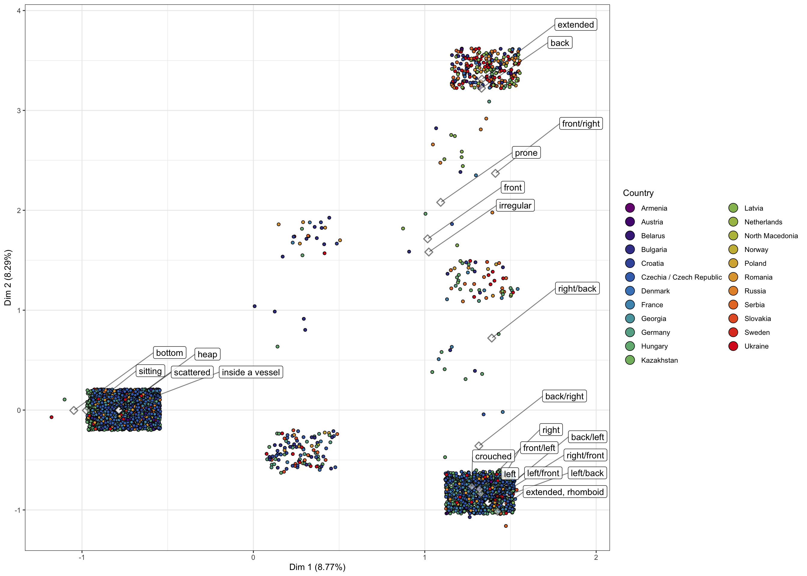
# dev.off()
# Group by count within same country and same coordinates on the dimensions
# Count number of entries per country
dim_country <- ind_dims[, .N, by = c("Country", "Dim 1", "Dim 2")]
dim_country$Country <- factor(dim_country$Country, levels = c("Netherlands",
"France",
"Germany",
"Denmark",
"Norway",
"Sweden",
"Latvia",
"Poland",
"Czechia / Czech Republic",
"Slovakia",
"Austria",
"Hungary",
"Croatia",
"Romania",
"Serbia",
"Bulgaria",
"North Macedonia",
"Belarus",
"Ukraine",
"Russia",
"Georgia",
"Armenia",
"Kazakhstan"))
# png("../Figures/Biplot_Country2.png", width = 14, height = 10, units = 'in', res = 330)
ggplot() +
geom_point(data = dim_country,
aes(x = `Dim 1`, y = `Dim 2`,
fill = Country,
size = N),
position = position_jitter(0.2, 0.2),
shape = 21) +
scale_fill_manual("Country", values = pals::tol.rainbow(23),
guide = guide_legend(override.aes = list(size = 5))) +
scale_size_continuous("Count", breaks = c(1, 10, 50, 100, 200, 400, 800),
range = c(3,20)) +
geom_point(data = var_dims,
aes(x = `Dim 1`, y = `Dim 2`),
shape = 23,
fill = 'white',
alpha = 0.5,
size = 3,
stroke = 1) +
geom_label_repel(data = var_dims,
aes(x = `Dim 1`, y = `Dim 2`, label = Variable),
segment.color = 'black',
segment.alpha = 0.5,
fill = alpha("white", 0.8),
max.overlaps = 50,
nudge_x = 1,
nudge_y = 0.5,
direction = "both") +
xlab(paste0("Dim 1 (", round(eig.val[1,2], 2), "%)")) +
ylab(paste0("Dim 2 (", round(eig.val[2,2], 2), "%)")) +
theme_bw() +
theme(legend.position = "right")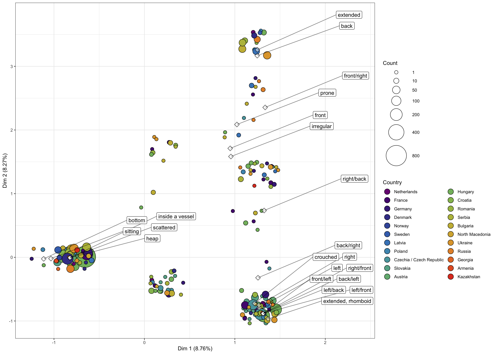
2.4.3 Period
## Biplot by PERIOD
dim_period <- ind_dims[, .N, by = c("Period", "Dim 1", "Dim 2")]
dim_period <- dim_period[!is.na(Period)]
dim_period$Period <- factor(dim_period$Period, levels = c("Paleolithic",
"Mesolithic",
"Mesolithic/Neolithic",
"Neolithic",
"Neolithic/Bronze Age",
"Eneolithic",
"Eneolithic/Bronze Age",
"Bronze Age",
"Bronze Age/Iron Age",
"Iron Age",
"Medieval"))
# png("../Figures/Biplot_Period.png", width = 14, height = 10, units = 'in', res = 330)
ggplot() +
geom_point(data = dim_period,
aes(x = `Dim 1`, y = `Dim 2`,
fill = Period,
size = N),
position = position_jitter(0.2, 0.2),
shape = 21) +
scale_fill_manual("Period", values = pals::parula(12),
guide = guide_legend(override.aes = list(size = 5))) +
scale_size_continuous("Count", breaks = c(1,50,100,250,500),
range = c(3, 20)) +
geom_point(data = var_dims,
aes(x = `Dim 1`, y = `Dim 2`),
shape = 23,
fill = 'white',
alpha = 0.5,
size = 3,
stroke = 1) +
geom_label_repel(data = var_dims,
aes(x = `Dim 1`, y = `Dim 2`, label = Variable),
segment.color = 'black',
segment.alpha = 0.5,
fill = alpha("white", 0.8),
max.overlaps = 50,
nudge_x = 1,
nudge_y = 0.5,
direction = "both") +
xlab(paste0("Dim 1 (", round(eig.val[1,2], 2), "%)")) +
ylab(paste0("Dim 2 (", round(eig.val[2,2], 2), "%)")) +
theme_bw() +
theme(legend.position = "right")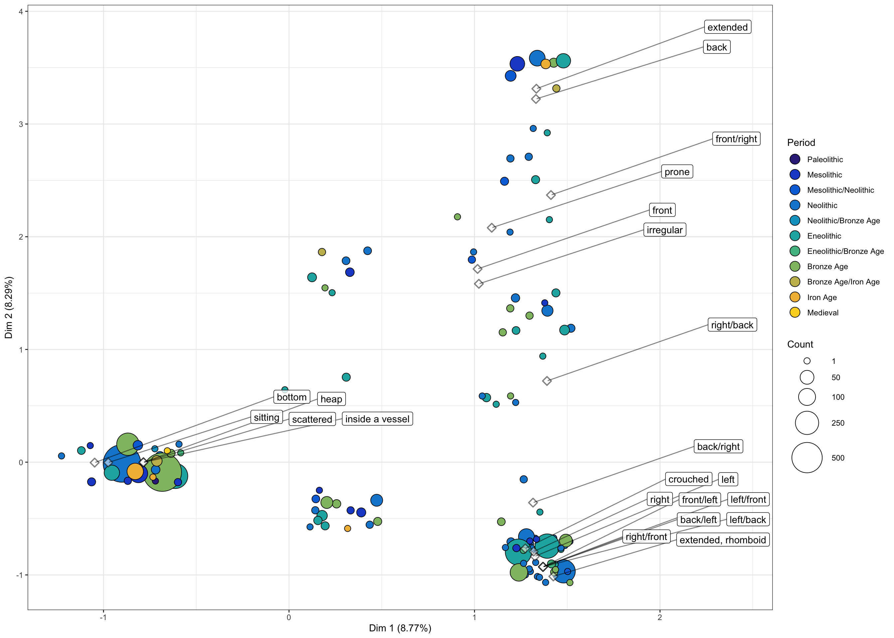
2.4.4 Culture
## Biplot by CULTURE
dim_culture <- ind_dims[, .N, by = c("Culture", "Dim 1", "Dim 2")]
dim_culture <- dim_culture[!is.na(Culture)]
# Plot only the 10 most frequent cultures
culture_keep <- dim_culture[, .N, by = "Culture"][order(N, decreasing = T)][, Culture][1:10]
# png("../Figures/Biplot_Culture.png", width = 14, height = 10, units = 'in', res = 330)
ggplot() +
geom_point(data = dim_culture[Culture %in% culture_keep],
aes(x = `Dim 1`, y = `Dim 2`,
fill = Culture,
size = N),
position = position_jitter(0.2, 0.2),
shape = 21) +
scale_fill_manual(values = pals::tol.rainbow(10),
guide = guide_legend(override.aes = list(size = 5))) +
scale_size_continuous("Count", breaks = c(1,25,50,100,150, 200),
range = c(3, 20)) +
geom_point(data = var_dims,
aes(x = `Dim 1`, y = `Dim 2`),
shape = 23,
fill = 'white',
alpha = 0.5,
size = 3,
stroke = 1) +
geom_label_repel(data = var_dims,
aes(x = `Dim 1`, y = `Dim 2`, label = Variable),
segment.color = 'black',
segment.alpha = 0.5,
fill = alpha("white", 0.8),
max.overlaps = 50,
nudge_x = 1,
nudge_y = 0.5,
direction = "both") +
xlab(paste0("Dim 1 (", round(eig.val[1,2], 2), "%)")) +
ylab(paste0("Dim 2 (", round(eig.val[2,2], 2), "%)")) +
theme_bw() +
theme(legend.position = "right",
legend.box = "vertical",
legend.direction = "vertical")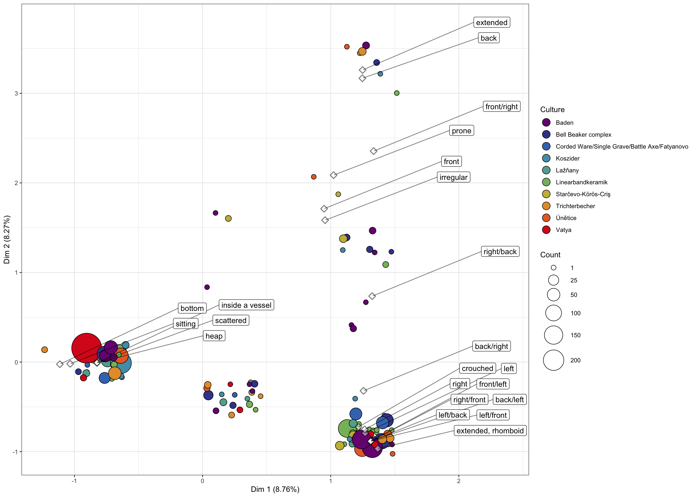
2.4.5 Sex
## Biplot by sex
dim_sex <- ind_dims[, .N, by = c("Sex", "Dim 1", "Dim 2")]
# png("../Figures/Biplot_sex.png", width = 14, height = 10, units = 'in', res = 330)
ggplot() +
geom_point(data = dim_sex,
aes(x = `Dim 1`, y = `Dim 2`,
fill = Sex,
size = N),
position = position_jitter(0.2, 0.2),
shape = 21) +
scale_fill_gradientn("Sex", colors = pals::parula(100)) +
scale_size_continuous("Count", breaks = c(1,50,100,300,600, 900),
range = c(3, 20)) +
geom_point(data = var_dims,
aes(x = `Dim 1`, y = `Dim 2`),
shape = 23,
fill = 'white',
alpha = 0.5,
size = 3,
stroke = 1) +
geom_label_repel(data = var_dims,
aes(x = `Dim 1`, y = `Dim 2`, label = Variable),
segment.color = 'black',
segment.alpha = 0.5,
fill = alpha("white", 0.8),
max.overlaps = 50,
nudge_x = 1,
nudge_y = 0.5,
direction = "both") +
xlab(paste0("Dim 1 (", round(eig.val[1,2], 2), "%)")) +
ylab(paste0("Dim 2 (", round(eig.val[2,2], 2), "%)")) +
theme_bw() +
theme(legend.position = "right")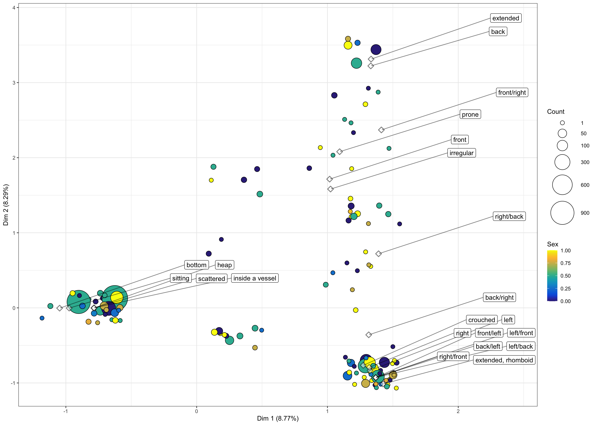
2.4.6 Ancestry
2.4.6.1 WHG
## Biplot by WHG
dim_whg <- ind_dims[, mean(WHG, na.rm = T), by = c("Dim 1", "Dim 2")]
dim_whg <- dim_whg[!is.nan(V1),]
names(dim_whg)[3] <- "WHG"
# png("../Figures/Biplot_WHG.png", width = 14, height = 10, units = 'in', res = 330)
ggplot() +
geom_point(data = dim_whg,
aes(x = `Dim 1`, y = `Dim 2`,
fill = WHG),
position = position_jitter(0.2, 0.2),
shape = 21,
size = 5) +
scale_fill_gradientn("WHG", colors = pals::parula(100), limits = c(0,1)) +
geom_point(data = var_dims,
aes(x = `Dim 1`, y = `Dim 2`),
shape = 23,
fill = 'white',
alpha = 0.5,
size = 3,
stroke = 1) +
geom_label_repel(data = var_dims,
aes(x = `Dim 1`, y = `Dim 2`, label = Variable),
segment.color = 'black',
segment.alpha = 0.5,
fill = alpha("white", 0.8),
max.overlaps = 50,
nudge_x = 1,
nudge_y = 0.5,
direction = "both") +
xlab(paste0("Dim 1 (", round(eig.val[1,2], 2), "%)")) +
ylab(paste0("Dim 2 (", round(eig.val[2,2], 2), "%)")) +
theme_bw() +
theme(legend.position = "right")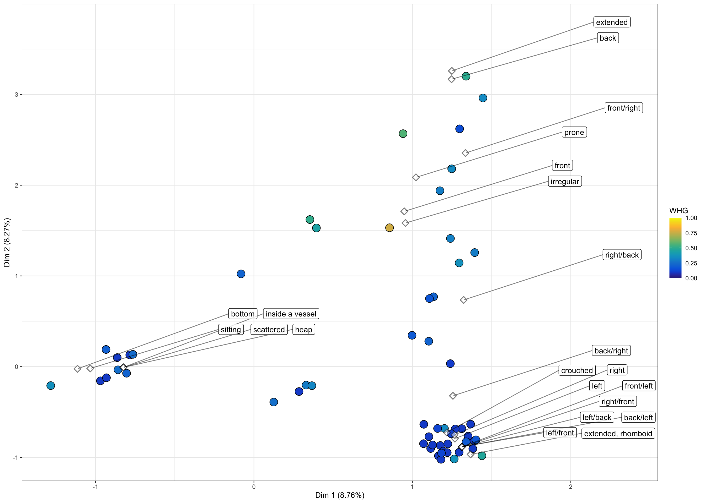
2.4.6.2 EHG
## Biplot by EHG
dim_ehg <- ind_dims[, mean(EHG, na.rm = T), by = c("Dim 1", "Dim 2")]
dim_ehg <- dim_ehg[!is.nan(V1),]
names(dim_ehg)[3] <- "EHG"
# png("../Figures/Biplot_EHG.png", width = 14, height = 10, units = 'in', res = 330)
ggplot() +
geom_point(data = dim_ehg,
aes(x = `Dim 1`, y = `Dim 2`,
fill = EHG),
position = position_jitter(0.2, 0.2),
shape = 21,
size = 5) +
scale_fill_gradientn("EHG", colors = pals::parula(100), limits = c(0,1)) +
geom_point(data = var_dims,
aes(x = `Dim 1`, y = `Dim 2`),
shape = 23,
fill = 'white',
alpha = 0.5,
size = 3,
stroke = 1) +
geom_label_repel(data = var_dims,
aes(x = `Dim 1`, y = `Dim 2`, label = Variable),
segment.color = 'black',
segment.alpha = 0.5,
fill = alpha("white", 0.8),
max.overlaps = 50,
nudge_x = 1,
nudge_y = 0.5,
direction = "both") +
xlab(paste0("Dim 1 (", round(eig.val[1,2], 2), "%)")) +
ylab(paste0("Dim 2 (", round(eig.val[2,2], 2), "%)")) +
theme_bw() +
theme(legend.position = "right")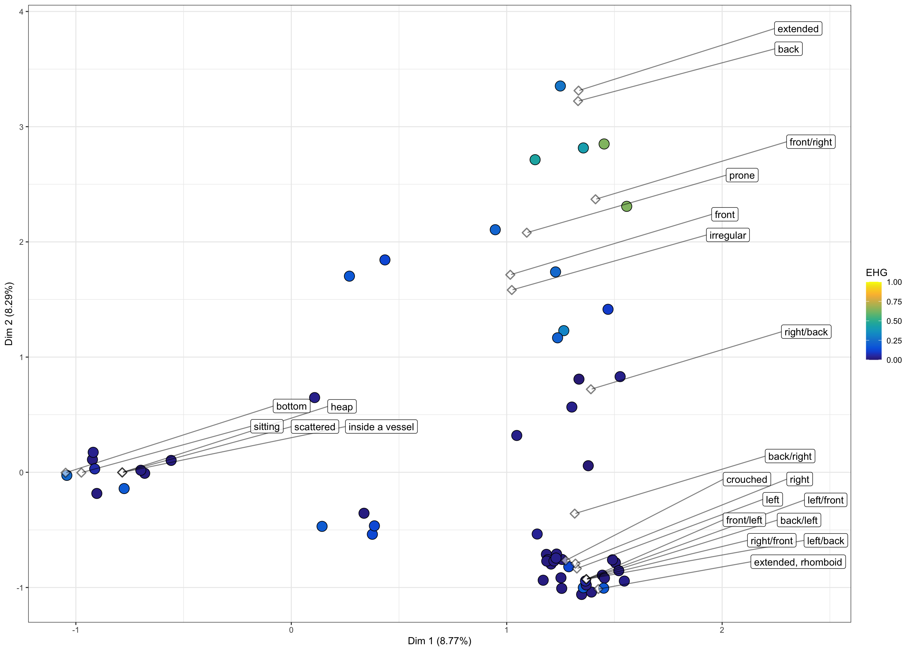
2.4.6.3 CHG
## Biplot by CHG
dim_chg <- ind_dims[, mean(CHG, na.rm = T), by = c("Dim 1", "Dim 2")]
dim_chg <- dim_chg[!is.nan(V1)]
names(dim_chg)[3] <- "CHG"
# png("../Figures/Biplot_CHG.png", width = 14, height = 10, units = 'in', res = 330)
ggplot() +
geom_point(data = dim_chg,
aes(x = `Dim 1`, y = `Dim 2`,
fill = CHG),
position = position_jitter(0.2, 0.2),
shape = 21,
size = 5) +
scale_fill_gradientn("CHG", colors = pals::parula(100), limits = c(0,1)) +
geom_point(data = var_dims,
aes(x = `Dim 1`, y = `Dim 2`),
shape = 23,
fill = 'white',
alpha = 0.5,
size = 3,
stroke = 1) +
geom_label_repel(data = var_dims,
aes(x = `Dim 1`, y = `Dim 2`, label = Variable),
segment.color = 'black',
segment.alpha = 0.5,
fill = alpha("white", 0.8),
max.overlaps = 50,
nudge_x = 1,
nudge_y = 0.5,
direction = "both") +
xlab(paste0("Dim 1 (", round(eig.val[1,2], 2), "%)")) +
ylab(paste0("Dim 2 (", round(eig.val[2,2], 2), "%)")) +
theme_bw() +
theme(legend.position = "right")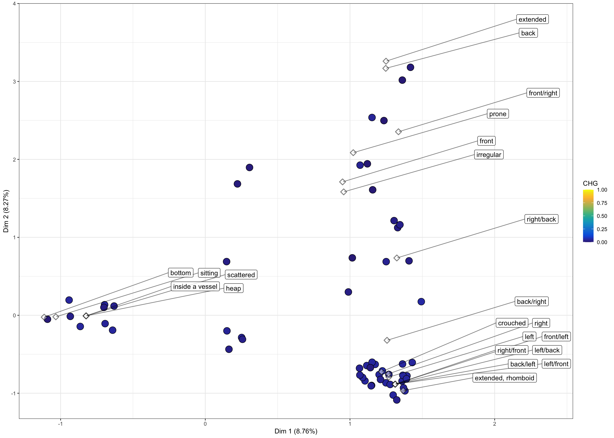
2.4.6.4 LVN
## Biplot by LVN
dim_lvn <- ind_dims[, mean(LVN, na.rm = T), by = c("Dim 1", "Dim 2")]
dim_lvn <- dim_lvn[!is.nan(V1)]
names(dim_lvn)[3] <- "LVN"
# png("../Figures/Biplot_LVN.png", width = 14, height = 10, units = 'in', res = 330)
ggplot() +
geom_point(data = dim_lvn,
aes(x = `Dim 1`, y = `Dim 2`,
fill = LVN),
position = position_jitter(0.2, 0.2),
shape = 21,
size = 5) +
scale_fill_gradientn("LVN", colors = pals::parula(100), limits = c(0,1)) +
geom_point(data = var_dims,
aes(x = `Dim 1`, y = `Dim 2`),
shape = 23,
fill = 'white',
alpha = 0.5,
size = 3,
stroke = 1) +
geom_label_repel(data = var_dims,
aes(x = `Dim 1`, y = `Dim 2`, label = Variable),
segment.color = 'black',
segment.alpha = 0.5,
fill = alpha("white", 0.8),
max.overlaps = 50,
nudge_x = 1,
nudge_y = 0.5,
direction = "both") +
xlab(paste0("Dim 1 (", round(eig.val[1,2], 2), "%)")) +
ylab(paste0("Dim 2 (", round(eig.val[2,2], 2), "%)")) +
theme_bw() +
theme(legend.position = "right")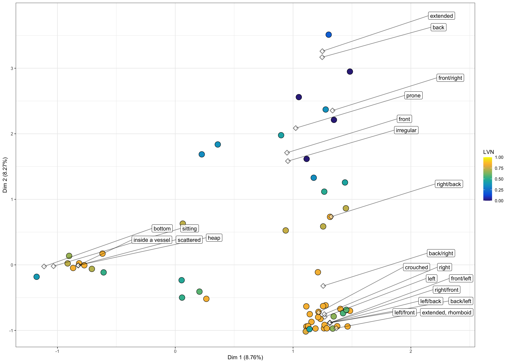
2.4.7 Mobility
## Biplot by mobility
dim_mobility <- ind_dims[, mean(mobility, na.rm = T), by = c("Dim 1", "Dim 2")]
dim_mobility <- dim_mobility[!is.nan(V1)]
names(dim_mobility)[3] <- "mobility"
# png("../Figures/Biplot_mobility.png", width = 14, height = 10, units = 'in', res = 330)
ggplot() +
geom_point(data = dim_mobility,
aes(x = `Dim 1`, y = `Dim 2`,
fill = mobility),
position = position_jitter(0.2, 0.2),
shape = 21,
size = 5) +
scale_fill_gradientn("Mobility", colors = pals::parula(100)) +
geom_point(data = var_dims,
aes(x = `Dim 1`, y = `Dim 2`),
shape = 23,
fill = 'white',
alpha = 0.5,
size = 3,
stroke = 1) +
geom_label_repel(data = var_dims,
aes(x = `Dim 1`, y = `Dim 2`, label = Variable),
segment.color = 'black',
segment.alpha = 0.5,
fill = alpha("white", 0.8),
max.overlaps = 50,
nudge_x = 1,
nudge_y = 0.5,
direction = "both") +
xlab(paste0("Dim 1 (", round(eig.val[1,2], 2), "%)")) +
ylab(paste0("Dim 2 (", round(eig.val[2,2], 2), "%)")) +
theme_bw() +
theme(legend.position = "right")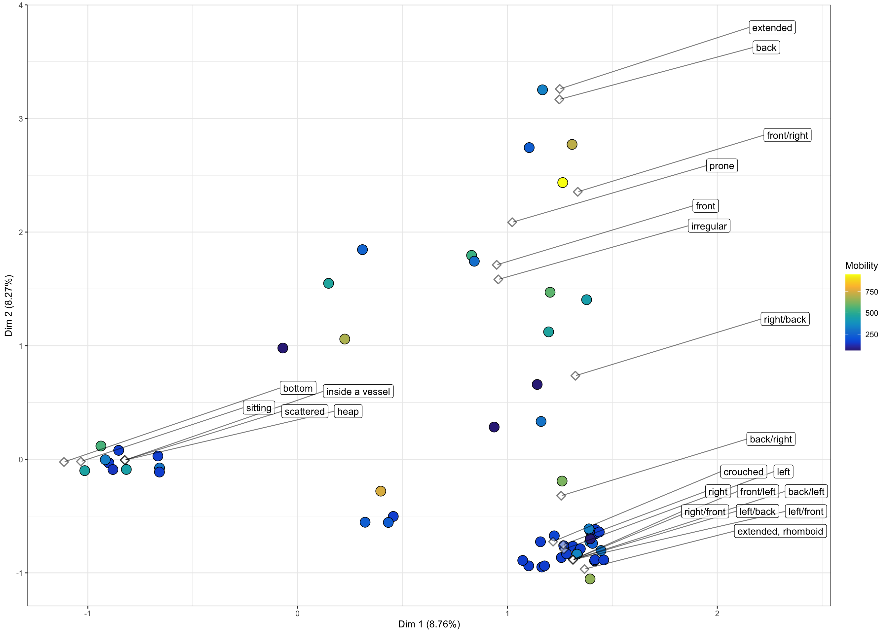
2.5 Modelling
We decided, based on the upset plot, to model the burial sides: right, left, back against ancestry and mobility. This is because both left and right are associated with the crouched position and the back is associated with the extended position, which are the most commonly found positions in graves.